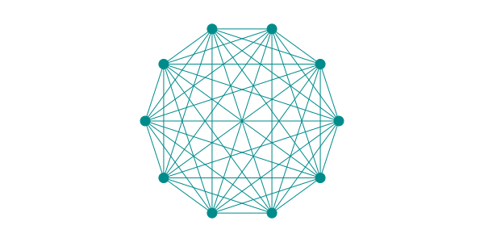

graph LR
subgraph s1["Grafo A"]
A((a))
B((b))
C((c))
D((d))
end
subgraph s2["Grafo B"]
direction LR
A1((e))
B1((f))
C1((g))
D1((h))
end
A --- B
B --- C
C --- A
B --- D
A1 --> B1
B1 --> C1
C1 --> A1
C1 --> D1
s1 ~~~ s2
A:::WT
B:::WT
C:::WT
D:::WT
A1:::WT
B1:::WT
C1:::WT
D1:::WT
classDef WT fill:#FFFFFF
style s1 stroke:none,fill:transparent
style s2 stroke:none,fill:transparent
Introdução aos Grafos
Grafo é uma estrutura composta por um conjunto de elementos chamados vértices e por um conjunto de arestas, que representam relações entre esses vértices. Intuitivamente, um grafo pode ser representado como um conjunto de nós interconectados.
Os vértices representam entidades do problema que o grafo modela. Por exemplo, os vértices podem representar computadores em uma rede ou cidades em um mapa. As arestas representam os relacionamentos entre essas entidades.
Quando a relação entre dois vértices não possui orientação, dizemos que a aresta é bidirecional, e o grafo é chamado de grafo não-direcionado, como no Grafo A.
Quando a relação possui orientação, isto é, vai de um vértice a outro em um único sentido, dizemos que a aresta é direcionada, e o grafo é chamado de grafo direcionado, como no Grafo B.
Definição Formal
Um grafo \(G\) é um par \((\mathcal{V},\mathcal{E})\) onde:
- \(\mathcal{V}\) é conjunto de vértices (ou nós)
- \(\mathcal{E}\) é conjunto de arestas
Se liga! Em grafos não-direcionados, as arestas são representadas por pares não ordenados. Já para os direcionados, elas são representadas por pares ordenados.
Para o grafo A, temos \[\mathcal{V} = \{a,b,c,d\} \text{ e } \mathcal{E} = \{\{a,b\},\{a,c\},\{b,c\},\{b,d\}\}.\] A aresta \(\{a,c\}\) (notação de conjunto), por exemplo, significa que existe uma conexão entre os vértices \(a\) e \(c\). Essa relação de adjacência é simétrica, ou seja, o grafo conecta \(a\) a \(c\) e vice-versa.
Já para o grafo B, temos \[\mathcal{V} = \{e,f,g,h\} \text{ e } \mathcal{E} = \{(e,f),(f,g),(g,e),(g,h)\}.\] Nesse caso, a aresta \((g,e)\) (notação de par ordenado), por exemplo, significa que existe uma aresta de \(g\) para \(e\). Essa relação de adjacência não é simétrica, ou seja, não ocorre no sentido de \(e\) para \(g\).
Importante
Um laço, ou self loop, em um grafo é uma aresta que conecta um vértice a ele mesmo. Arestas paralelas são duas ou mais arestas que conectam o mesmo par de vértices.
- Grafo simples: não admite laços nem arestas paralelas.
- Multigrafo: não admite laços.
- Pseudógrafo: admite laços e arestas paralelas.
Todo grafo simples é um multigrafo e todo multigrafo é um pseudógrafo.
Grafo Ponderado
Os grafos podem ser enriquecidos através da rotulação das arestas. É sabido que, em grafos com muitas arestas, designar cada uma por pares é uma tarefa tediosa. Além disso, uma aresta como par em si não traz valor semântico ao modelo. Portanto, é comum a rotulação das arestas para distinguir as relações ou representar ações, por exemplo.
graph LR A((Fonte)) -- "coletar dados" --> B((Processar)) B -- "validar" --> C((Aprovado)) B -- "erro" --> D((Rejeitado)) C -- "armazenar" --> E((BD)) A:::WT B:::WT C:::WT D:::WT E:::WT classDef WT fill:#FFFFFF
Rótulos permitem que o grafo modele sistemas mais ricos:
- redes de comunicação: tipo de protocolo;
- grafos de fluxo: tipo de recurso transportado;
- grafos de controle: condição de transição;
- grafos químicos ou biológicos: tipo de interação.
As arestas também pode carregar um valor numérico conhecido como peso. Isso vem ao encontro da definição de grafo ponderado.
Um grafo ponderado, ou valorado, é uma tupla \((\mathcal{V},\mathcal{E},\mathcal{w})\), onde \(\mathcal{V}\) e \(\mathcal{E}\) são nossos conhecidos conjuntos de vértices e arestas, respectivamente. Já \(\mathcal{w}:\mathcal{E}\rightarrow\mathbb{R}\) é uma função que associa a cada aresta um custo (ou peso). Esse valor depende do problema que o grafo está modelando.
graph LR A((a)) -->|4| B((b)) B -->|2| C((c)) C -->|6| D((d)) D -->|3| A A:::WT B:::WT C:::WT D:::WT classDef WT fill:#FFFFFF
No grafo acima, o custo de ir de
- \(a\) para \(b\) é 4
- \(b\) para \(c\) é 2
- \(c\) para \(d\) é 6
- \(d\) para \(a\) é 3
O custo não é uma propriedade geométrica do grafo, mas uma modelagem do problema. O custo pode representar distância, tempo, consumo de recursos, custo financeiro e até penalidades.
Se liga! Quando não há valor associado à aresta dizemos que o peso vale 1.
Aplicações

Os grafos possuem um vasto número de aplicações, dentre as quais, podemos destacar:
- Redes sociais (arestas representam conexões)
- Infraestrutura (rodovias, roteamento)
- Dependências entre tarefas
- Compiladores
- Busca da web
- Análise de redes elétricas, biológicas e químicas
Propriedades
Vizinhança
Dizemos que os vértices \(v\) e \(u\) são vizinhos, se existe uma aresta que conecta ambos diretamente.
A vizinhaça de um vértice \(v\), denotado \(\mathcal{N}(v)\), é o conjunto de vértices vizinhos à \(v\).
Tomando como exemplo o grafo A, temos:
- \(\mathcal{N}(a) = \{b, c\}\)
- \(\mathcal{N}(b) = \{a, c, d\}\)
- \(\mathcal{N}(c) = \{a, b\}\)
- \(\mathcal{N}(d) = \{b\}\)
Já para grafos direcionados, a noção de vizinho não é única. Nesse caso, temos a vizinhaça de entrada \(\mathcal{N^-}(v)\) e a vizinhaça de saída \(\mathcal{N^+}(v)\) que denotam o conjunto dos vértices que apontam para \(v\) e o conjunto de vértices alcançáveis a partir de \(v\) por uma aresta saindo de \(v\), respectivamente.
Tomando como exemplo o grafo B, temos:
- \(\mathcal{N^-}(e)=\{g\}\text{ e }\mathcal{N^+}(e)=\{f\}\)
- \(\mathcal{N^-}(f)=\{e\}\text{ e }\mathcal{N^+}(f)=\{g\}\)
- \(\mathcal{N^-}(g)=\{f\}\text{ e }\mathcal{N^+}(g)=\{e,h\}\)
- \(\mathcal{N^-}(h)=\{g\}\text{ e }\mathcal{N^+}(h)=\emptyset\)
Se liga! Os vértices que apontam para \(v\) são chamados de antecessores. Já os que são apontados por \(v\) são os sucessores.
Grau
O grau de um vértice \(v\), denotado \(\mathcal{deg}(v)\), é a quantidade de arestas que incidem sobre ele.
Tomando como exemplo o grafo A, temos: \[\mathcal{deg}(a)=2, \mathcal{deg}(b)=3, \mathcal{deg}(c)=2 \text{ e }\mathcal{deg}(d)=1\] Para um grafo direcionado, temos o grau de entrada \(\mathcal{deg^-}(v)\) e o grau de saída \(\mathcal{deg^+}(v)\) que denotam a quantidade de arestas que indidem e saem do vértice, respectivamente.
Tomando como exemplo o grafo B, temos: \[\mathcal{deg^-}(e)=\mathcal{deg^-}(f)=\mathcal{deg^-}(g)=\mathcal{deg^-}(h)=1\] e \[\mathcal{deg^+}(e)=1,\mathcal{deg^+}(f)=1,\mathcal{deg^+}(g)=2\text{ e }\mathcal{deg^+}(h)=0\]
Se liga!
Em grafos não-direcionados, não há distinção entre grau de entrada e grau de saída.
Note que \[\mathcal{deg}(v)=|\mathcal{N}(v)|.\] Ou seja, o grau de um vértice \(v\) é o número total de vizinhos. De semelhante modo para os grafos direcionados: \[\mathcal{deg^-}(v)=|\mathcal{N^-}(v)|\text{ e }\mathcal{deg^+}(v)=|\mathcal{N^+}(v)|\]
Dica
Quanto todos os vértices de um grafo tem o mesmo grau \(k\), dizemos que o grafo é \(k\)-regular.
Ordem e Tamanho
A ordem de um grafo é determinada pela quantidade de vértices, isto é, \(|\mathcal{V}|\). Já a quantidade de arestas, \(|\mathcal{E}|\), determina o seu tamanho.
Dica
Um grafo cujo número de arestas é significativamente menor do que o número máximo possível é chamado de esparso. Caso contrário, um grafo com muitas arestas é dito denso.
Nesta seção, introduzimos brevemente a estrutura de dados grafo. Nós
✅ definimos essa estrutura;
✅ estudamos suas representações computacionais.